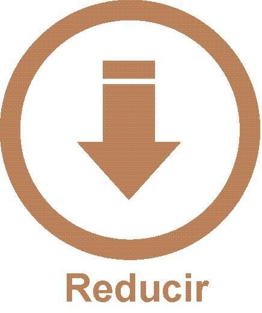

¿Que es y para que sirve?
El término reducir significa volver algo a su estado anterior, así como disminuir, resumir, aminorar o simplificar. Se origina del latín reducere, palabra compuesta por el prefijo re-, que significa hacia atrás, y el verbo ducere, que se refiere a conducir.Por tanto, reducir, hacer uso de la menor cantidad de recursos naturales posibles, es la acción más importante que los consumidores pueden hacer por el medio ambiente. La idea no es que no se consuma nada, sino hacerlo de manera sostenible. Los productos de usar y tirar o los que llevan un empaquetado excesivo son los primeros de la lista que deberían evitarse, y disminuir así su impacto.
Quienes somos:
Nosotras somos Delfina Boscolo y Paloma Chaves, dos alumnas del colegio Oakhill Pilar. Este año comenzamos con el proyecto "Digital House", y como proyecto final debemos crear un sitio web. Nuestro sitio concientiza sobre las 3R. Especificamente en el termino de Reducir.
Elementos a reducir
El plástico se puede reducir evitando las bolsas de ese material para las compras y utilizando las de tela o changuitos. También comprando productos de envases sean retornables o bebidas en botellas de vidrio. Además al comprar comida por peso se puede usar un recipiente y así evitar el uso de bandejas plásticas y el papel film; y tener un set de cubiertos en la oficina para no usar descartables (de plástico). En tanto, el papel se puede imprimir en doble faz. Y se pueden evitar las cajas de cartón al comprar zapatos, prendas u otros objetos. Para reducir el vidrio se pueden elegir envases retornables para las bebidas. En cuanto al metal se puede optar por los alimentos frescos en vez de consumir los enlatados. Comprar sillas y mesas de madera, en vez de aluminio o hierro.